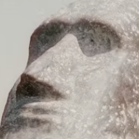

I'm Sarah Boyle, Just a girl who loves literature, food, and travel. Hostess with the mostest!
Blog post
The Misappropriation of Culture in Fantastical Literature; A Result of Rushing to Publication?
Discover how the popularity of online reading communities has led to a surge in published books, but at what expense to cultural authenticity?
Read
Video
Easy Shirley Temple Tutorial
A vintage inspired tutorial on how to make everyone's go to party beverage.
Watch
Podcast
New River Crime Ep.1
Podcast episode on tragic teen murder suicide in Blacksburg, VA 2023.
Listen